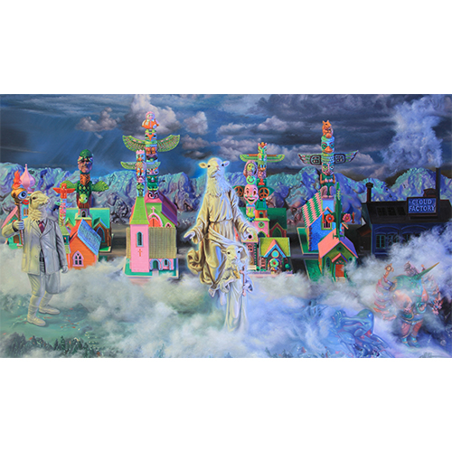

Exhibitions
POPAGANDASTAN – New Works from Ron English, Corey Helford Gallery, Los Angeles, California, US, October 26–November 16, 2013.
Literature
Ron English, Fauxlosophy: The Art of Ron English (San Francisco: Last Gasp, 2008), p. 114. ISBN 978-0867196566.
Ron English, Death and the Eternal Forever (Korero Press, 2014), p. 90. ISBN 978-0957664920.
Ron English, Original Grin: The Art of Ron English (Paris: Cernunnos, 2019), p. 245. ISBN 978-2374950938.
Ron English, Status Factory: The Art of Ron English (San Francisco: Last Gasp of San Francisco, 2014), p. 195. ISBN 978-0867197891.
Notes
Also known as The Ascension of Sheep and Beau Lief Sheep.
In Death and the Eternal Forever, this work was erroneously reported as 40x60 inches.